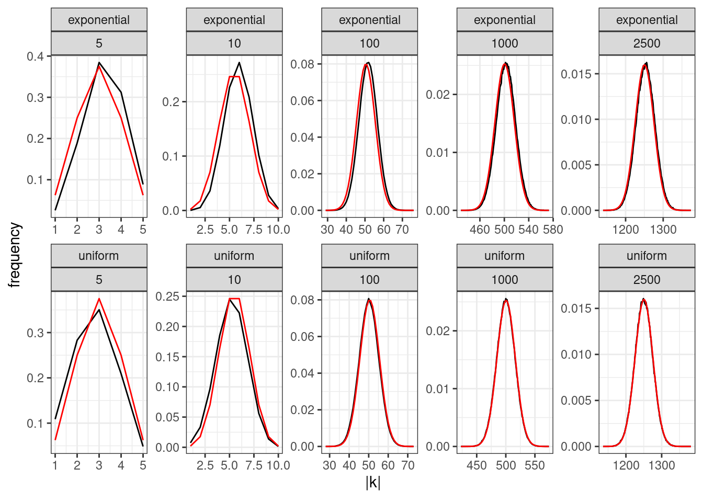
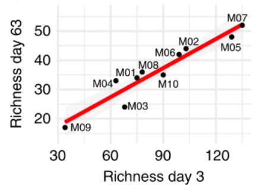
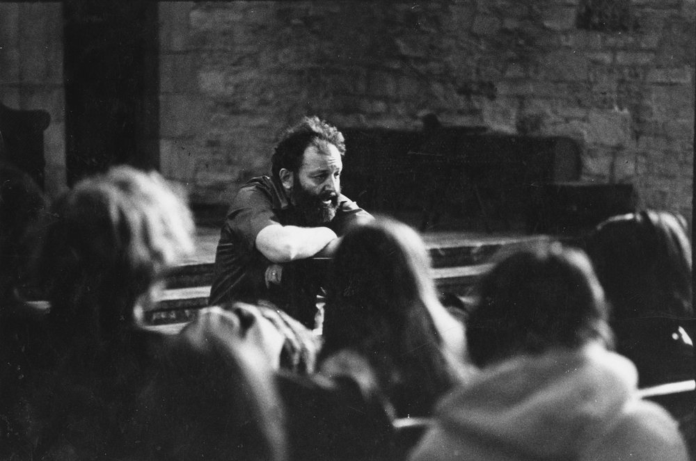

GLV with random parameters
All species growing logistically
Suppose we take \(n\) populations, each growing according to:
\[ \dot{x}_i = x_i (r_i - A_{ii} x_i) \]
with \(A_{ii} > 0\). We assume that the growth rates are sampled independently from a distribution: \(r_i \sim Q\), a distribution with mean \(0\), \(\mathbb E(r_i) = 0\) and symmetric about its mean, such that \(\phi(r_i) = \phi(-r_i)\), where \(\phi(\cdot)\) is the p.d.f. of distribution \(Q\). For example, we could choose \(r_i \sim \mathcal N(0, \sigma^2)\), or \(r_i \sim \mathcal U[-1, 1]\). Naturally, whenever \(r_i > 0\), the population will grow to \(x_i^\star = r_i / A_{ii}\). If \(r_i < 0\), on the other hand, the population will go extinct. Because of the symmetry around zero, each population has therefore probability \(1/2\) of persisting. When we have \(n\) populations, the number of coexisting populations \(\|k\|\) is a random variable following the binomial distribution:
\[ p(\|k\| | n) = \binom{n}{\|k\|} \frac{1}{2^n}\quad \|k\| \sim \mathcal B\left(n, \frac{1}{2}\right) \]
The random zoo
Now consider a GLV model with random parameters. We choose \(r_i\) from a distribution with mean zero and symmetric about the mean, and each interaction \(A_{ij}\) from a distribution with mean zero and symmetric about the mean. Moreover, we add a constant to the diagonal of the matrix such that the symmetric part of \(A\), \(H(A) = \frac{1}{2} (A + A^T)\) is positive definite. As we have seen before, this means that dynamics will always converge to a saturated equilibrium.
We now introduce a family of \(2^n\) matrices \(S_i\), with:
\[ \begin{aligned} S_1 &= \begin{pmatrix} 1 & 0 & 0 & \cdots & 0\\ 0 & 1 & 0 & \cdots & 0\\ 0 & 0 & 0 & \cdots & 0\\ \vdots & \vdots & \vdots &\ddots &\vdots\\ 0 & 0 & 0 & 0 &1 \end{pmatrix} = I_n\\ S_2 &= \begin{pmatrix} -1 & 0 & 0 & \cdots & 0\\ 0 & 1 & 0 & \cdots & 0\\ 0 & 0 & 1 & \cdots & 0\\ \vdots & \vdots & \vdots &\ddots &\vdots\\ 0 & 0 & 0 & 0 &1 \end{pmatrix} \\ S_3 &= \begin{pmatrix} 1 & 0 & 0 & \cdots & 0\\ 0 & -1 & 0 & \cdots & 0\\ 0 & 0 & 1 & \cdots & 0\\ \vdots & \vdots & \vdots &\ddots &\vdots\\ 0 & 0 & 0 & 0 &1 \end{pmatrix} \\ S_4 &= \begin{pmatrix} -1 & 0 & 0 & \cdots & 0\\ 0 & -1 & 0 & \cdots & 0\\ 0 & 0 & 1 & \cdots & 0\\ \vdots & \vdots & \vdots &\ddots &\vdots\\ 0 & 0 & 0 & 0 &1 \end{pmatrix}\\ \vdots\\ S_{2^n} &= \begin{pmatrix} -1 & 0 & 0 & \cdots & 0\\ 0 & -1 & 0 & \cdots & 0\\ 0 & 0 & -1 & \cdots & 0\\ \vdots & \vdots & \vdots &\ddots &\vdots\\ 0 & 0 & 0 & 0 &-1 \end{pmatrix} = -I_n\\ \end{aligned} \]
These matrices, called signature matrices are their own inverse (a matrix with this property is called involutory), and therefore, we have that \(S_i S_i = S_i^2 = I_n\). Geometrically, these matrices represent a reflection in each of the axes corresponding to the negated rows or columns.
We then consider what happens when we transform the parameters by multiplying them by \(S_i\). Take an arbitrary GLV system, and solve for the \(x\) that makes \(r + Ax = 0_n\):
\[ x = -A^{-1} r \]
The vector is a feasible equilibrium for the system if \(x > 0_n\). Now consider the transformed system:
\[ r' = S_i r \quad A' = S_iAS_i \]
Note that \(A'\) is similar to \(A\), and therefore has the same eigenvalues; moreover, \(\phi(r') = \phi(r)\) and \(\phi(A') = \phi(A)\), because of symmetry. Now compute the new solution
\[ \begin{aligned} x' &= -(S_iAS_i)^{-1} S_i r\\ &=-S_iA^{-1}S_i S_i r\\ &=-S_iA^{-1}r\\ &= S_i x \end{aligned} \]
That is, the transformation changes the sign of the components of \(x\) corresponding to the negative coefficients in \(S_i\). Hence, for any possible choice of \(r\) and \(A\), there is only one possible choice of \(S_i\) that makes the equilibrium feasible. Because all matrices \(A'\) and all vectors \(r'\) have the same probability/density, then the probability of having a positive \(x\) is exactly \(1/2^n\). Thus, a system with random parameters and a strongly stable matrix of interactions has the same probability of feasibility as that of a system in which populations are not interacting!
We have seen that when \(A\) is such that \(H(A)\) is negative definite, dynamics always converge to a saturated equilibrium. We want to compute the probability of finding a saturated equilibrium, in which populations belonging to set \(k\) coexist, and the remaining populations cannot invade when rare.
We thus divide \(x\), \(r\) and \(A\) as:
\[ x = \begin{pmatrix} y\\ z \end{pmatrix} \quad \tilde{x} = \begin{pmatrix} y^\star\\ 0_{\|n-k\|} \end{pmatrix} \quad A = \begin{pmatrix} \mathfrak A & \mathfrak B\\ \mathfrak C & \mathfrak D \end{pmatrix}\quad r = \begin{pmatrix} \mathfrak r\\ \mathfrak s \end{pmatrix} \]
We also divide \(S_i\) into:
\[ S_i = \begin{pmatrix} S_{i}^{(k)} & 0_{\|k\|, \|n-k\|}\\ 0_{\|n-k\|, \|n\|} & S_{i}^{(n-k)} \end{pmatrix} \]
When we use the signature matrix, the vector \(\mathfrak s\) and the matrix \(\mathfrak C\) become:
\[ \mathfrak s' = S_i^{(n-k)} \mathfrak s\quad \mathfrak C' = S_i^{(n-k)} \mathfrak C S_i^{(k)} \]
The feasibility and nonivasibility condition, for a given choice of \(S_i\) read:
\[ \begin{cases} y' = S_i^{(k)} (-\mathfrak A^{-1}\mathfrak r) > 0_{\|k\|}\\ D(z)^{-1} z =S_i^{(n-k)}(\mathfrak s + \mathfrak C y') < 0_{\|n-k\|}\\ \end{cases} \]
There is only one choice out of \(2^{\|k\|}\) that makes \(y' > 0_{\|k\|}\); moreover, there is only one choice of \(S_i^{(n-k)}\) that fulfills the noninvasibility condition, out of \(2^{\|n-k\|}\) equiprobable choices. Then, we have that the probability of finding exactly \(\|k\|\) populations coexisting at the saturated equilibrium, with the remaining \(\|n-k\|\) that cannot invade is exactly \(1/(2^{\|k\|} \cdot 2^{\|n-k\|}) = 1/2^n\). The number of coexisting populations at the saturated equilibrium follows the binomial distribution:
\[ p(\|k\| | n) = \binom{n}{\|k\|} \frac{1}{2^n}\quad \|k\| \sim \mathcal B\left(n, \frac{1}{2}\right) \]
exactly as for the non-interacting case.
Random zoo and experimental data
We have seen above that in a (stable) GLV model with random interactions, the expected number of species coexisting is proportional to the size of the initial pool: \(\mathbb E(\|k\|) = n/2\). We start the system with all the populations present, and we assemble a final community from the top-down. Interestingly, this type of experiment is carried out with increasing frequency in microbial ecology, where a microbial community taken from a certain environment is challenged with a new synthetic environment in the laboratory. For example, Leonora Bittleston and colleagues extracted the microbial communities inhabiting 10 distinct pitcher plants, and cultured them in synthetic media in the laboratory for two months. They plot the number of microbial strains present at the beginning of the experiment (Day 3, such that the strains that cannot grow in the medium are filtered out) and after two months (Day 63), finding a striking linear relationship between the initial size \(n\) and that at the end of the experiment \(\|k\|\):

GLV and metatpopulation dynamics

Richard Levins (1930-2016). Born in Brooklyn, New York, he studied agriculture and mathematics at Cornell. Early on, influenced by geneticist and polymath JBS Haldane, he became a Marxist activist. Upon graduation, having been blacklisted as a communist (and with the Korean War raging), he moved to Puerto Rico with his wife, and set up a farm. In his spare time, he conducted experiments on fruit flies, organized anti-colonialist rallies and anti-war protests, and taught at the University of Puerto Rico. In 1964, he was invited to Cuba to help organize the biology department of the University of Havana. He received his doctorate from Columbia University in 1965. In 1967 he moved to the University of Chicago, where he joined Richard Lewontin—with whom he established a lifelong collaboration. They both moved to Harvard in the late 1970s.
It is impossible to summarize his numerous contributions to ecology, mathematics, political science, and the philosophy of science. He has inspired countless ecologists, and his approach and style are still visible in many of the research programs being carried out today. Of particular interest for this class, his theory of evolution in a changing environment (Levins (1968)), the development of the idea of limiting similarity (MacArthur and Levins (1967)), his work on metapopulation dynamics (Levins (1969)), and the development of Loop Analysis (i.e., a qualitative theory for dynamical systems, Puccia and Levins (2013)).
Metapopulations
In 1969, Richard Levins—then a professor at U. Chicago—proposed a simple model for a “metapopulation”, i.e., a “population of populations in which local extinctions are balanced by remigration from other populations” (Levins (1969)).
The model is very simple. Suppose that there are very many patches of suitable habitat, and that we track the proportion of patches occupied by a certain species, \(p(t)\). Two processes affect the proportion of occupied patches: extinction, turning an occupied patch into a vacant patch, and colonization, turning a vacant patch into an occupied patch. For the simplest case, suppose that occupied patches can send “propagules” to empty patches at a fixed rate \(\gamma > 0\), and that the rate at which local populations go extinct is the same for all patches, \(\delta > 0\).
Call \(q(t) = 1-p(t)\) the proportion of vacant patches. Then, the dynamics are described by the equations:
\[ \begin{cases} \dot{p}(t) = -\delta p(t) + \gamma p(t)q(t)\\ \dot{q}(t) = \delta p(t) - \gamma p(t)q(t)\\ \end{cases} \]
in which we assume mass-action (like in GLV). Note that the two equations sum to zero (i.e., we’re in a zero-sum setting), and therefore we can substitute \(q(t) = 1-p(t)\) to obtain:
\[ \dot{p} = p(-\delta + \gamma q) = p(\gamma - \delta - \gamma p) \]
which is the usual equation for the logistic growth, with growth rate \(\gamma - \delta\) and self-interaction \(\gamma\). As such, as long as \(\gamma > \delta\), the proportion of inhabited patches will converge to \(p^\star = 1 - \delta/\gamma > 0\), which is globally stable.
Colonization-competition tradeoff
Levins’ model was extended in a number of ways. One of the most interesting cases is that in which we have \(n\) species, each characterized by an extinction and a colonization rate, and there is a trade-off such that better colonizers are worse competitors, and vice versa. In particular:
- \(p_i\) is the proportion of patches occupied by population \(i\), with \(\sum_j p_j \leq 1\)
- \(m_i\) is the extinction rate for population \(i\)
- \(c_i\) is the colonization rate for population \(i\)
- each species can colonize patches occupied by inferior competitors (i.e., these patches “look” empty to them)
- competitive abilities are inversely related to the colonization rates, i.e., if \(c_j < c_i\), then \(j\) is a better competitor than \(i\)
The model is a system of \(n\) coupled differential equations:
\[ \dot{p}_i = -m_i p_i - \sum_{j=1}^{i-1} c_j p_j p_i + c_i p_i \left(1-\sum_{j=1}^{i} p_j\right) \]
There are three processes at play:
- \(m_i p_i\) the rate at which patches occupied by \(i\) become empty
- \(c_j p_j p_i\) propagules from superior competitors \(j\) (produced at rate \(c_j p_j\)) reach patches occupied by \(i < j\) and turn them over
- propagules of \(i\), produced at rate \(c_i p_i\), reach patches that are either empty or occupied by inferior competitors (written as the difference between \(1\) and the sum of the proportion of patches occupied by species with equal or better competitive abilities, \(1-\sum_{j=1}^{i} p_j\)) and colonize them
The model is GLV
With some rearranging, we can write this model as GLV:
\[ \begin{aligned} \dot{p}_i &= p_i\left(-m_i - \sum_{j=1}^{i-1} c_j p_j + c_i \left(1-\sum_{j=1}^{i} p_j\right)\right)\\ &= p_i\left(-m_i - \sum_{j=1}^{i-1} c_j p_j + c_i - c_i p_i -\sum_{j=1}^{i-1} c_i p_j \right)\\ &= p_i\left(c_i -m_i - c_i p_i -\sum_{j=1}^{i-1} (c_i + c_j) p_j \right)\\ &= p_i\left(r_i - \sum_{j}A_{ij} p_j\right) \end{aligned} \] Where we have defined the matrix \(A\):
\[ A = \begin{pmatrix} c_1 & 0 & 0 &\cdots &0\\ c_1 + c_2 & c_2 & 0 & \cdots & 0\\ c_1 + c_3 & c_2 + c_3 & c_3 & \cdots & 0\\ \vdots & \vdots & \vdots & \ddots & \vdots\\ c_1 + c_n & c_2 + c_n & c_3 + c_n & \cdots & c_n \end{pmatrix} \]
and \(r_i = c_i - m_i\).
We want to show that for each initial set of species in the system, dynamics will converge to a unique saturated equilibrium. To prove this, it is sufficient to find a positive diagonal matrix, \(D(w)\) such that
\[ M = D(w) A + A^T D(w) \]
is positive definite. Take \(w = c^{-1}\) (i.e., the reciprocals of the colonization rates). Then we have that
\[ M = 1_n 1_n^T + Q \]
Where
\[ Q_{ij} = \begin{cases} 1 \quad \text{if}\; j = i\\ \frac{c_i}{c_j} \quad \text{if}\; j > i\\ \frac{c_j}{c_i} \quad \text{if}\; j < i\\ \end{cases} \]
To show that \(M\) is positive definite, we write the Cholesky decomposition of \(Q\)
\[ Q = R^T R \]
With
\[ R_{ij} = \begin{cases} \frac{\sqrt{c_i^2 - c_{i-1}^2}}{c_j} \quad \text{if}\; j \geq i\\ 0 \quad \text{if}\; j < i\\ \end{cases} \]
(defining \(c_0 = 0\)). Note that all the elements of \(R_{ij} \geq 0\). As such, \(Q\) is positive (semi-)definite, and \(M\) is the sum of two positive (semi-)definite matrices, and is thus positive (semi-)definite.
An example. Suppose \(n = 3\), then:
\[ A = \begin{pmatrix} c_1 & 0 & 0\\ c_1 + c_2 & c_2 & 0\\ c_1 + c_3 & c_2 + c_3 & c_3 \end{pmatrix} \] \[ M = D(c)^{-1} A + A^T D(c)^{-1}=\begin{pmatrix} 2 & 1 + \frac{c_1}{c_2} & 1 + \frac{c_1}{c_3}\\ 1 + \frac{c_1}{c_2} &2 & 1 + \frac{c_2}{c_3}\\ 1 + \frac{c_1}{c_3} & 1 + \frac{c_2}{c_3} & 2\\ \end{pmatrix} \] \[ Q = \begin{pmatrix} 1 & \frac{c_1}{c_2} & \frac{c_1}{c_3}\\ \frac{c_1}{c_2} & 1 & \frac{c_2}{c_3}\\ \frac{c_1}{c_3} & \frac{c_2}{c_3} & 1\\ \end{pmatrix} \] \[ R = \begin{pmatrix} 1 & \frac{c_1}{c_2} & \frac{c_1}{c_3}\\ 0 & \frac{\sqrt{c_2^2 - c_1^2}}{c_2} & \frac{\sqrt{c_2^2 - c_1^2}}{c_3}\\ 0 & 0 & \frac{\sqrt{c_3^2 - c_2^2}}{c_3} \end{pmatrix} \quad Q = R^T R \]
Computing equilibria
For simplicity, we are going to consider the case in which \(m_i = m\) for all \(i\). Because the matrix is lower-triangular, computing the equilibrium is especially simple, given that the equilibrium value for each species depends only on those of the preceding species. The equilibrium of the first species is given by:
\[ c_1 p_1 = c_1 -m \]
and thus
\[ p_1^\star = \frac{c_1 - m}{c_1} = 1 - \frac{m}{c_1} \]
The first species follows the Levins’ model, and persists as long as \(c_1 > m\). We compute the equilibrium for the second species, assuming that the first species is present:
\[ \begin{aligned} (c_1 + c_2) p_1^\star + c_2 p_2^\star = c_2 - m\\ (c_1 + c_2)\left(1 - \frac{m}{c_1}\right) + c_2 p_2^\star &= c_2 - m\\ c_1 + c_2 - m - m \frac{c_2}{c_1} + c_2 p_2^\star &= c_2 - m\\ p_2^\star = \frac{m}{c_1} - \frac{c_1}{c_2} \end{aligned} \]
Thus, species 2 can establish if:
\[ c_2 > \frac{c_1^2}{m} \]
Computing the equilibrium of the third species we find that it is positive if:
\[ c_3 > \frac{c_2^2}{\frac{c_1^2}{m}} \]
You can see that there is a simple pattern. Call \(l_0 = m\), then the condition for the first species to persist is that \(c_1 > l_0\); second species to persist whenever \(c_2 > c_1^2 / l_0 = l_1\); the third species persists whenever \(c_3 > c_2^2 / l_1\), and so forth:
\[ l_i = \frac{c_i^2}{l_{i-1}} \]
This value represents the “shadow” each species that establishes casts on the colonization axis. A worse competitor \(i + 1\) can establish if and only if:
\[ c_{i+1} > l_i \]
Thus, if the species has a sufficiently large colonization rate, it will establish; if not, it will go extinct. In this way, we can compute the set of coexisting species in linear time (i.e., without the need to invert the matrix).
Random parameters
Sample the colonization rate values indipendently from a distribution (with positive support); for example \(\gamma_i \sim \mathcal U[m,1+m]\), or from the exponential distribution \(\gamma_i \sim \mathcal{Exp(\lambda) + m}\) (we sample values above the mortality rate—any lower value for the colonization rate would lead to extinction). Then sort them and assign the smallest value to species 1 (\(c_1 = \min_i \gamma_i\)), the second smallest value to species 2, etc. These are called the order statistics of the distribution.
How many species will coexist? Given that the final set of coexisting species can be found in linear time, we can run large experiments in which we compute the number of coexisting species \(\|k\|\) when starting with \(n\) for different sizes \(n\) and choice of distribution from which to sample the colonization rates.
We can see that as \(n\) increases, the distribution of \(\|k\|\) approaches the binomial distribution (plotted in red)—to be precise, given that the first species persists by definition (because \(c_1 > m\) by design), we have that asymptotically \(\|k\|-1 \sim \mathcal B(n-1, \frac{1}{2})\), irrespective of the distribution used to sample the colonization rates. Therefore, as \(n \to \infty\), the distribution of surviving species is universal.
Sketch of the proof
The argument to support these claims is a little too complicated for the time that we have available. To give a sense of how the argument is developed, we show that the probability that \(\|k\|=1\) is about \(1/2^{(n-1)}\) when we sample the colonization rates from the uniform distribution \(\mathcal U[m, m+1]\).
We can write the joint distribution for \((c_1, c_n)\) (i.e., the smallest and largest colonization rate) for an arbitrary (absolutely continuous) distribution, from which we extract \(n\) colonization rates as:
\[ f(c_1,c_n) = n(n-1) (\Phi(c_n)-\Phi(c_1))^{(n-2)} \phi(c_1) \phi(c_n) \]
where \(\phi(\cdot)\) is the probability density function for the distribution used to sample the values, and \(\Phi(\cdot)\) the cumulative density function.
When \(n\) is large, we can approximate the “niche shadow” value as follows. We know that species \(j\) is excluded if \(c_i < c_j < l_i\), where \(l_i\) is the niche shadow cast by species \(i\):
\[ l_i = \frac{c_i^2}{l_{i-1}} \]
Thus, to be included in the set of coexisting species, we need \(c_j > l_i\). We introduce \(X_i\), the amount by which \(c_j\) exceeds \(l_{i-1}\):
\[ X_i = c_i - l_{i-1} \]
Then, we have
\[ l_i = \frac{(l_{i-1} + X_i)^2}{l_{i-1}} = l_{i-1} + 2 X_i +\frac{X_i^2}{l_{i-1}} \approx l_{i-1} + 2 X_i = 2 c_i - l_{i-1} \]
where we have neglected the term \(X_i^2 / l_{i-1}\), which is small when \(n\) is large (because the colonization values are closer together).
We now can compute the probability that species \(1\) excludes all other species, assuming that the niche shadow cast by species 1 is \(\approx 2 c_1 -m\). We need to distinguish between two cases: a) the shadow cast by species 1 does not exceed the upper bound for the distribution (\(m+1\) in this case) and all other colonization rates fall into \((c_1, 2 c_1 - m)\), and b) the shadow cast by species 1 exceeds the bound, and thus all other species are excluded by definition.
The niche shadow for the first species, \(l_1 \approx 2 c_1 - m\) does not exceed \(m+1\) whenever \(c_1 \leq m + 1/2\). We thus compute the probability that i) \(c_1 \leq m + 1/2\), and ii) \(c_n \leq 2 c_1 -m\) for the uniform distribution, using:
\[ \phi(z) = 1\quad \Phi(z) = z -m \]
The density for \((c_1,c_n)\) simplifies to:
\[ f(c_1,c_n) = n(n-1) (c_n - c_1)^{(n-2)} \]
and we need to integrate this function for:
\[ n(n-1)\int_{m}^{m + 1/2} \int_{c_1}^{2c_1 - m}(c_n-c_1)^{(n-2)} dc_1 dc_n = 2^{-n} \] Now we treat the case in which \(c_1\) exceeds \(m + 1/2\), and \(c_1 \leq c_n \leq m+1\):
\[ n(n-1)\int_{m+1/2}^{m + 1} \int_{c_1}^{m+1}(c_n-c_1)^{(n-2)} dc_1 dc_n = 2^{-n} \]
Summing the two mutually-exclusive outcomes, we find
\[ P(\|k\| = 1) = 2^{-n} + 2^{-n} = 2^{-n+1} \]
consistently with the asymptotic distribution \(\|k\|-1 \sim \mathcal B(n-1, 1/2)\). This approach can be extended by computing the probability that a given species \(i\) excludes \(\kappa_i\) other species; by summing across all combinations we can approximate the distribution of coexisting species (see Miller et al., SI section B).
References and further readings
Coexistence in GLV with random parameters and stable interaction matrix
- Serván, C.A., Capitán, J.A., Grilli, J., Morrison, K.E. and Allesina, S., 2018. Coexistence of many species in random ecosystems. Nature ecology & evolution, 2(8), pp.1237-1242.
Experiment on pitcher plant microbial communities
- Bittleston, L.S., Gralka, M., Leventhal, G.E., Mizrahi, I. and Cordero, O.X., 2020. Context-dependent dynamics lead to the assembly of functionally distinct microbial communities. Nature communications, 11(1), p.1440.
The original metapopulation model:
- Levins, R., 1969. Some demographic and genetic consequences of environmental heterogeneity for biological control. Bulletin of the ESA, 15(3), pp.237-240.
Many authors contributed to the study of the model with competition-colonization tradeoff:
- Hastings, A., 1980. Disturbance, coexistence, history, and competition for space. Theoretical population biology, 18(3), pp.363-373.
derived the model by extending Levins’ model to \(n\) populations. Noted that better competitors need to be poor colonizers to yield coexistence.
- Tilman, D., 1994. Competition and biodiversity in spatially structured habitats. Ecology, 75(1), pp.2-16.
performed a thorough analysis of the model, inspired by data on grasslands as well as life-history theory. Noted that infinitely many species could coexist, and derived conditions for limiting similarity.
- Nowak, M.A. and May, R.M., 1994. Superinfection and the evolution of parasite virulence. Proceedings of the Royal Society of London. Series B: Biological Sciences, 255(1342), pp.81-89.
derived the model in the context of superinfection (better pathogens displace others in infected individuals). Showed that this would lead to the coexistence of pathogens of different virulence, rather than convergence to an optimum.
- Kinzig, A.P., Levin, S.A., Dushoff, J. and Pacala, S., 1999. Limiting similarity, species packing, and system stability for hierarchical competition-colonization models. The American Naturalist, 153(4), pp.371-383.
studied the model in the high-diversity limit. Highlighted pathological behaviors of the model. Provided a construction to pack infinitely many species in a finite interval of colonization rates (requires fine-tuning).
- Miller, Z.R., Clenet, M., Della Libera, K., Massol, F. and Allesina, S., 2024. Coexistence of many species under a random competition–colonization trade-off. Proceedings of the National Academy of Sciences, 121(5), p.e2314215121.
contains the derivations presented here, and much more.